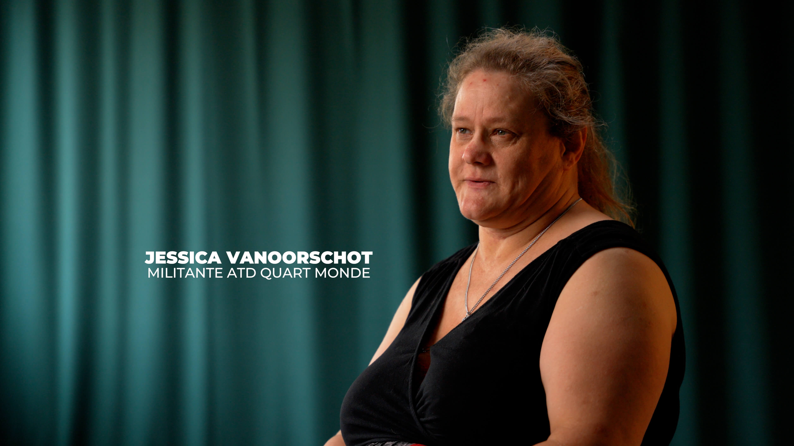
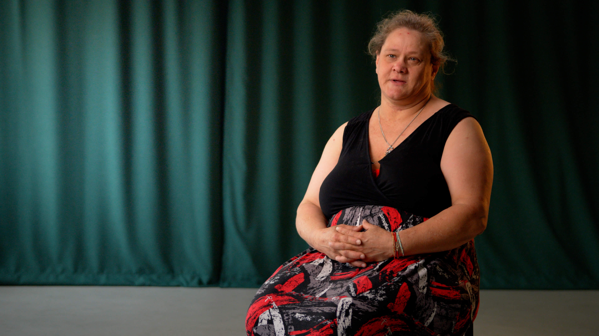
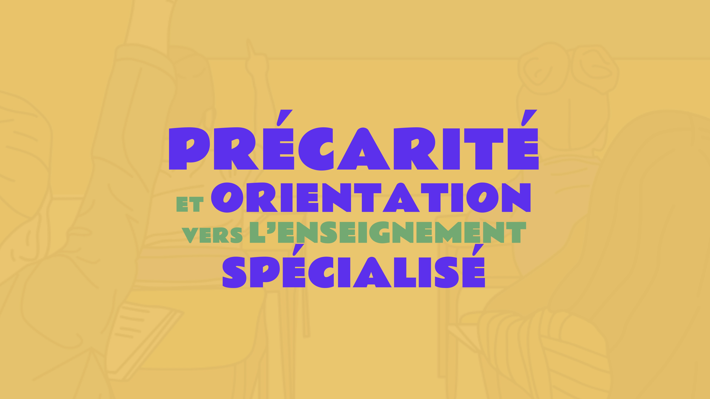
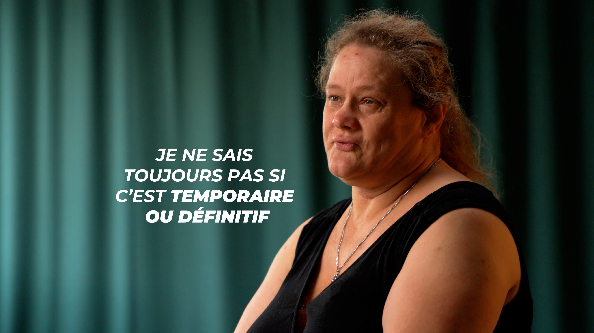
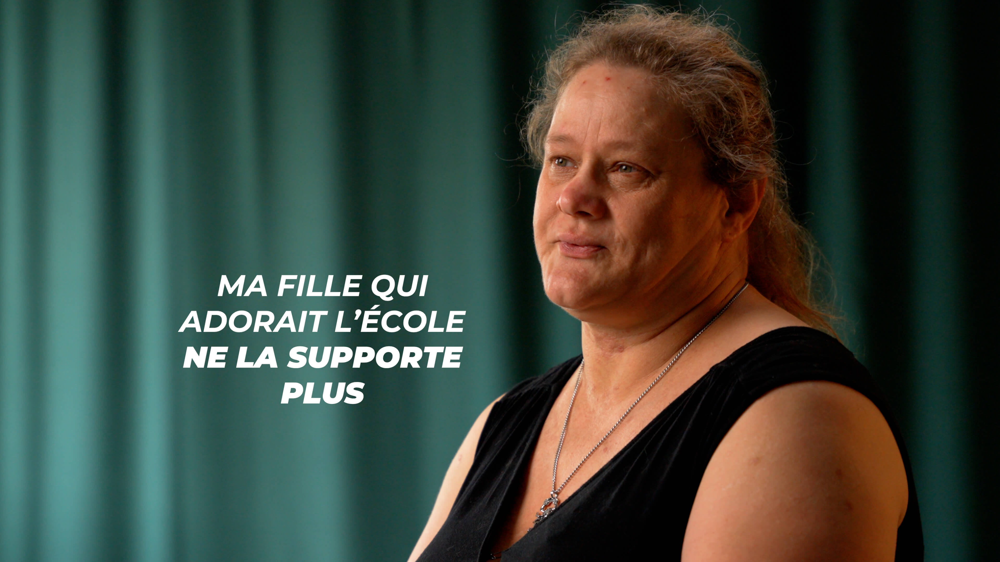
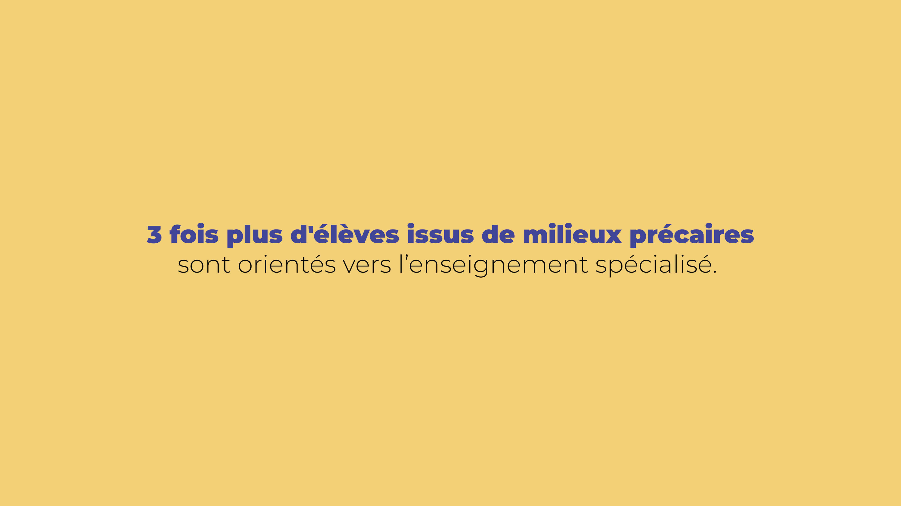

Précarité et orientation vers le sépcialisé
Interview d'une militante de l'association ATD Quart Monde
Réalisation d'une vidéo de témoignage (format long et court) pour l'association ATD Quart Monde qui lutte contre la pauvreté à partir du vécu des personnes qui la vivent. L'objectif de la vidéo était de mettre en lumière l'injustice qui amène les enfant des familles précarisées à être orientés dans l'enseignement spécialisé. Le point de vue est celui d'une maman, Jessica, qui raconte comment elle n'a pas été consulté dans les rélfexions et décisions prises autour de son enfant. 3 fois plus d'élèves issus de milieux précaires sont orientés vers le spécialisé. L'enseignement en Belgique est dans les plus inégalitaires d'Europe...
Réalisation: Jonas Guyaux et Emma Landet-Lacoste





